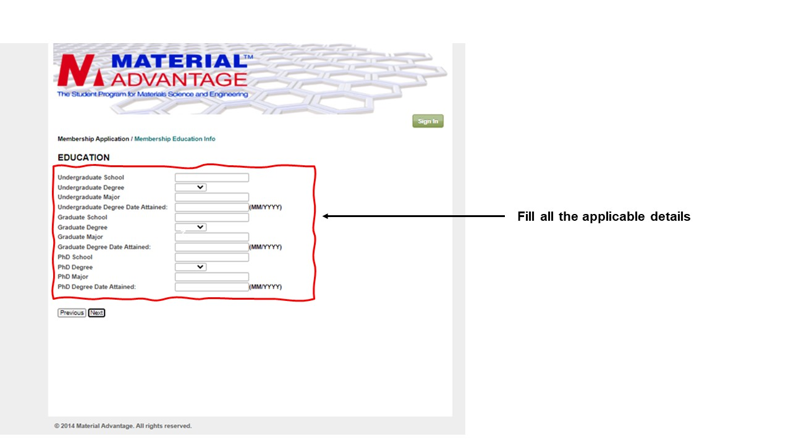

What you will need to proceed with the registration.
- We strongly recommend you to use a Desktop/Laptop during registering.
- Good Internet Connection
- Complete the registration in one go, don't leave in between.
- The process can take anywhere from 7 - 15 Minutes or more, so kindly be patient and Proceed by filling in details properly and reading all the instructions carefully.
NOTE : Step 1 and Step 2 can be ignored, if the students have used the signup button on Material Advantage @ IITK website.
Step 1.
Browse to http://materialadvantage.org/ which will direct you to the official page of MA.
Step 2.
Go to the membership tab on the i.e. the second option from the left.
Step 3.
From the drop down menu select JOIN/RENEW option which will redirect you to the page given below.

 3. From the drop down menu select JOIN/RENEW option which will redirect you to the page given below.
5. Create your account by filling all your details asked. Fill your official mail ID, NAME and PIN code. Click NEXT
which will take you the next page.
6. Click Next after reading all the points.
6. Fill all your details carefully and Click next to proceed.
7. Fill all your details carefully and Click next to proceed.
3. From the drop down menu select JOIN/RENEW option which will redirect you to the page given below.
5. Create your account by filling all your details asked. Fill your official mail ID, NAME and PIN code. Click NEXT
which will take you the next page.
6. Click Next after reading all the points.
6. Fill all your details carefully and Click next to proceed.
7. Fill all your details carefully and Click next to proceed.